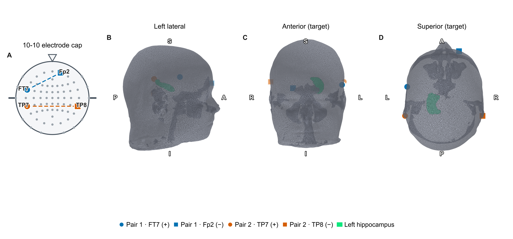
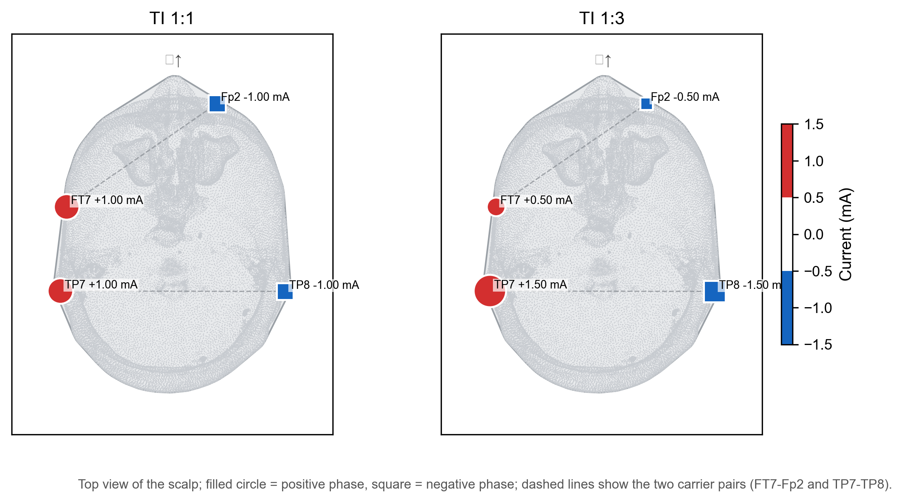
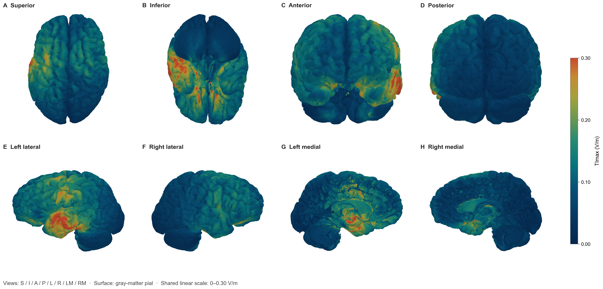
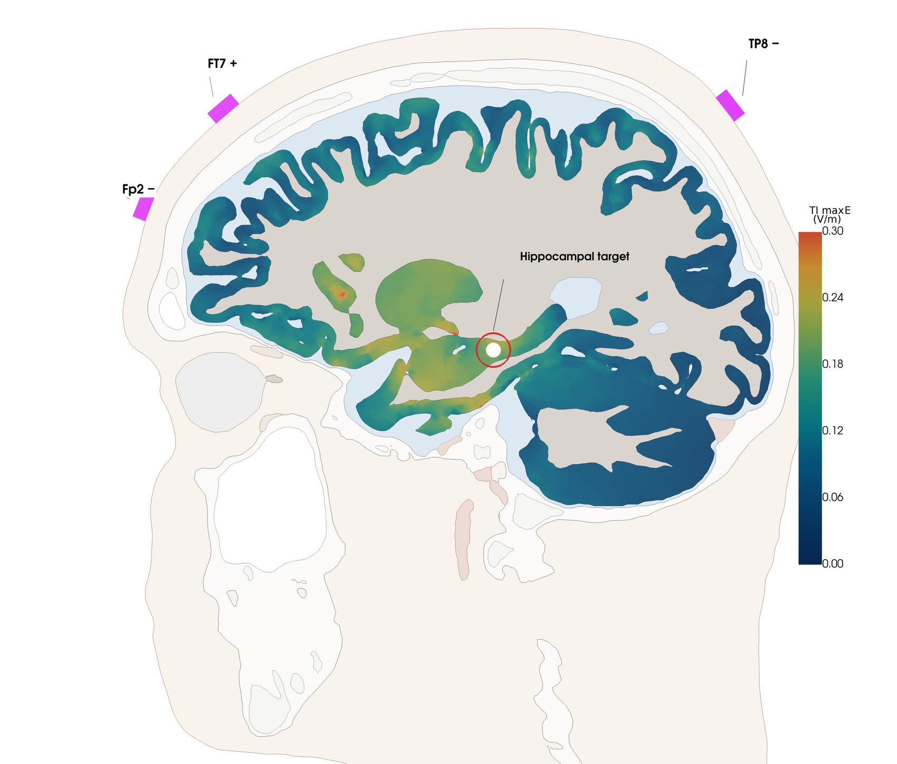

示例方案（TI 1:1）
- FT7 正相端(+1.0 mA) / Fp2 负相端(−1.0 mA)，2.005 kHz
- TP7 正相端(+1.0 mA) / TP8 负相端(−1.0 mA)，2.000 kHz
本报告评估一种无创脑刺激方案（时间干涉电刺激，TI）在脑内产生的电场分布：左海马靶区获得多强电场、海马以外区域暴露多少，以及结果的质量与限制。
主要发现：左海马电场中位数 0.070 V/m、P95 0.183 V/m；海马以外灰质 P95 0.123 V/m，前部皮质采样区（左侧颞上回）P95 0.188 V/m。
读图说明：P95 表示区域内较强的电场水平（第 95 百分位）；“方向投影 TI”指沿神经纤维走向测量的电场，“TImax”指不限定方向的电场强度。数值保留三位小数，完整数据见区域统计表。
最重要的限制：结果来自单个示例受试者的头模型，未分析参数变化的影响，也没有临床结局数据。详细说明见第六节“解释边界”。
本次示例方案：E1 = FT7（正相端）→ Fp2（负相端），1 mA；E2 = TP7（正相端）→ TP8（负相端），1 mA，载波 2.005 / 2.000 kHz。方案名 TI 1:1 表示两路电流幅值比 E1:E2 = 1:1；本次仿真只计算 TI 1:1，TI 1:3（E1:E2 = 1:3）仅在图 2 中作为对照说明。
电流幅值按峰值口径（波峰到零点）表示；+/− 只表示交流电的相位关系，不是正负极。两路电流频率相差 5 Hz，叠加后电场强度以每秒 5 次的节奏波动，本报告测量的就是这个波动电场的强度（V/m）。
两路电流幅值比：示例方案（TI 1:1） 即 E1:E2 = 1:1。

头模型基于公开示例 MRI 构建，原始影像不在本报告附件内；10-10 位点按标准命名系统标注。

电极坐标、通道与电流数值见支撑 CSV。
影像信息：MRI 数据来源：[填写]；扫描信息：[填写]；头模型构建与审核：[填写]。

左海马 ROI 取自 Harvard-Oxford 25% 最大概率图谱；灰质单元中心变换至 MNI 空间后，以最近邻法采样图谱标签。解剖影像与分析区域的影像数据见本报告附件。
| 检查 | 状态 | 依据 |
|---|---|---|
| MRI 来源与扫描信息 | 未评估 | [填写 MRI 来源、序列与扫描参数] |
| DTI 数据来源与张量处理 | 未评估 | [填写 DTI 来源（是否受试者自身 DWI）、采集参数、张量拟合与主方向提取方法] |
| 脑组织分割与模型人工审核 | 未评估 | [填写审核人、日期和结论] |
| 电极位置与接触建模 | 未评估 | [填写电极定位方法、接触几何与模型附着检查] |
| 网格精度（收敛性） | 未评估 | [填写网格收敛分析或分辨率研究结果] |
| 组织电导率取值（各向同性假设） | 需注意 | 按各向同性取值，数值来自计算会话记录；各向异性与电导率不确定性未评估 |
| 靶区图谱定位与配准 | 未评估 | [填写配准工具、目视检查与边界核对记录] |
| 计算网格一致性（结构自检） | 通过 | 两次载波计算使用同一套脑模型网格，节点和单元逐项一致；该自检不验证网格精度（收敛性） |
| 电场指标公式复算 | 通过 | 该方案的方向投影 TI 与 TImax 使用独立实现的公式逐点复算，与计算软件输出最大绝对误差小于 1×10⁻¹² V/m（容差内完全一致）；该检查验证公式一致性，不验证有限元数值精度 |
| 纤维方向数据覆盖 | 需注意 | 按单元数计，有效方向向量覆盖 99.22% 灰质单元（未覆盖 0.78%）；无有效方向向量的 10,425 个单元按体积约占灰质总体积 0.50%（体积基数与单元数基数不同，两个百分比不直接相加）。这些单元从方向投影 TI 统计中排除，记为缺失，不写为零；方向可靠性未单独评估 |
| 跨受试者稳健性 | 未评估 | 当前仅包含一个示例受试者 |
电场在全脑的空间分布见图 4–图 8；关键数值与指标定义见结论与区域统计表。

逐单元电场数据与影像格式电场数据见本报告附件。

主要指标为方向投影 TI，TImax 作为方向无关的补充指标。逐单元电场数据与影像格式电场数据见本报告附件。

皮层表面取自 SimNIBS 灰质表面网格（该网格在中线区域存在开口，内侧视图以矢状切面形式表达）；A–H 依次为上/下/前/后/左外侧/右外侧/左内侧/右内侧。色标与光照参数见支撑 CSV。

热点为逐灰质单元显示，不代表激活范围；透明脑壳来自皮层表面网格，内部热点按单元中心绘制。

电场仅映射于灰质四面体，白质/脑脊液等为解剖底图；切面位于个体空间 x = 海马靶点中心坐标。组织配色：头皮=棕褐，颅骨=浅灰，脑脊液=浅蓝，白质=灰褐，灰质=电场伪彩（见右侧色标）。
本节给出分区统计、指标定义与分析区域；核心数值与结论部分一致，完整表格见下。
| 方案 | 区域 | 平均值 (V/m) | 中位数 (V/m) | P95 (V/m) | TImax 平均值 (V/m) | TImax 中位数 (V/m) | TImax P95 (V/m) | 体积 (mm³) |
|---|---|---|---|---|---|---|---|---|
| 示例方案（TI 1:1） | 左海马 | 0.0796 | 0.0697 | 0.1830 | 0.1940 | 0.1995 | 0.2415 | 4077.2 |
| 示例方案（TI 1:1） | 右海马 | 0.0512 | 0.0406 | 0.1332 | 0.1402 | 0.1453 | 0.1709 | 4275.5 |
| 示例方案（TI 1:1） | 前部皮质采样区 | 0.0663 | 0.0511 | 0.1877 | 0.1585 | 0.1480 | 0.2899 | 22055.8 |
| 示例方案（TI 1:1） | 中部皮质采样区 | 0.0784 | 0.0666 | 0.1931 | 0.2231 | 0.2111 | 0.3094 | 1284.3 |
| 示例方案（TI 1:1） | 后部皮质采样区 | 0.0735 | 0.0737 | 0.1375 | 0.1551 | 0.1529 | 0.1886 | 1385.2 |
| 示例方案（TI 1:1） | 全部非靶区灰质 | 0.0501 | 0.0445 | 0.1232 | 0.1096 | 0.1009 | 0.2075 | 715577.8 |
| 指标 | 单位 | 定义 |
|---|---|---|
| 平均值 | V/m | 方向投影电场按灰质体积加权的区域平均值（非 TImax） |
| 中位数 | V/m | 方向投影电场按灰质体积加权的区域中位数（非 TImax） |
| P95 | V/m | 方向投影电场按灰质体积加权的第 95 百分位数（非 TImax） |
| TImax 平均值 | V/m | 不限定方向的包络电场幅度按全部灰质体积加权的区域平均值；不排除缺少纤维方向数据的区域，统计域与方向投影电场不同 |
| TImax 中位数 | V/m | 不限定方向的包络电场幅度按全部灰质体积加权的区域中位数；不排除缺少纤维方向数据的区域，统计域与方向投影电场不同 |
| TImax P95 | V/m | 不限定方向的包络电场幅度按全部灰质体积加权的第 95 百分位数；不排除缺少纤维方向数据的区域，统计域与方向投影电场不同 |
| 体积 | mm³ | 方向投影电场数值有效且体积为正的灰质总体积；缺少纤维方向数据的区域记为缺失并排除，不写为零 |
| 区域 | 用途 | 定义 | 坐标空间 |
|---|---|---|---|
| 左海马 | 靶区 | Harvard-Oxford 25% 最大概率图谱左海马 | MNI 标准空间（已配准至示例受试者个体模型） |
| 右海马 | 对侧参照 | Harvard-Oxford 25% 最大概率图谱右海马 | MNI 标准空间（已配准至示例受试者个体模型） |
| 前部皮质采样区 | 非靶区采样 | DK40（Desikan–Killiany）图谱左侧颞上回（superior temporal gyrus）：图谱经 SimNIBS 从 fsaverage 映射至个体皮层表面，再按最近邻顶点赋给灰质单元，不再使用球形采样 | 示例受试者个体空间 |
| 中部皮质采样区 | 非靶区采样 | 以 FT7-TP7 头皮坐标中点邻近灰质单元为中心的 10 mm 球形采样区（个体头模型坐标约 −64.2、8.6、2.2 mm），非解剖图谱分区 | 示例受试者个体空间 |
| 后部皮质采样区 | 非靶区采样 | 以 TP7 电极邻近灰质单元为中心的 10 mm 球形采样区（个体头模型坐标约 −63.8、−19.6、8.4 mm），非解剖图谱分区 | 示例受试者个体空间 |
| 全部非靶区灰质 | 非靶区 | 有效灰质分析域减去左海马靶区 | 示例受试者个体空间 |
结果只描述电场在脑内的分布，不能推断神经激活、疗效或安全性。
适用范围：结果仅适用于该受试者的头模型、本次电极位置和计算设置。
以下因素未评估，可能影响结果的可推广性：
本节提供论文撰写所需图件、图注、结果表与方法文本，以及供复核的电场数据与质量记录。
报告说明：当前为示例草稿（公开示例数据），不作为临床决策依据。
结论摘要：左海马电场中位数 0.070 V/m（示例方案）。
| 编号 | 图题 | 文件 |
|---|---|---|
| 图 1 | 电极位置与两组回路 | PNG · SVG · PDF · 电极坐标数据 |
| 图 2 | 电极配置与电流分配（俯视） | PNG · |
| 图 3 | 头模型与左海马靶区 | PNG · SVG · PDF · 绘图渲染参数（非源数据） |
| 图 4 | 两组回路各自形成的基础电场 | PNG · SVG · PDF · 绘图渲染参数（非源数据） |
| 图 5 | 示例方案的全脑电场分布 | PNG · SVG · PDF · 绘图渲染参数（非源数据） |
| 图 6 | 皮层表面电场热点分布（多视角） | PNG · SVG · PDF · 色标与分布参数 |
| 图 7 | 透明脑内热点分布 | PNG · SVG · PDF · |
| 图 8 | 仿真头模矢状切面电场分布 | PNG · 切面与靶点参数 |
MRI 数据来源：[填写]；扫描序列与参数：[填写]；头模型建立方法：[填写]；分割与网格审核：[填写]；DTI 数据来源与张量处理：[填写，是否受试者自身 DWI、采集参数、张量拟合与主方向提取方法]。
采用 SimNIBS 4.6.0 有限元求解器（hypre），灰质分析含 1,337,567 个四面体，其中 10,425 个缺少纤维方向数据（见“可信度”章节）。电导率按各向同性取值（白质 0.126、灰质 0.275、脑脊液 1.654、颅骨 0.010、头皮 0.465 S/m，来自 SimNIBS 会话文件；完整列表见参数记录），未纳入各向异性。
灰质单元中心变换至 MNI 标准空间后，以最近邻法采样 Harvard-Oxford 25% 最大概率图谱，定义左、右海马 ROI。
前部皮质采样区采用 Desikan–Killiany（DK40，FreeSurfer aparc.a2005s）图谱的左侧颞上回（superior temporal gyrus）。图谱经 SimNIBS atlas2subject 从 fsaverage 表面映射到个体皮层表面，再按最近邻顶点赋给灰质单元。中部与后部皮质采样区暂保留以 FT7–TP7 中点和 TP7 为中心的 10 mm 球形采样定义。
两路载波 2.005 kHz 与 2.000 kHz 相差 5 Hz，叠加形成 5 Hz 低频包络。方向投影 TI 为电场沿纤维走向（DTI 主方向，作为几何近似）的包络分量，通常小于或等于方向无关的 TImax，具体取决于纤维方向与电场方向的夹角；由于投影轴取决于 DTI 主方向，更换 DTI 数据或处理方法将改变全部数值。主要指标为方向投影 TI，TImax 作为补充；两者均为调制包络幅度，非神经激活阈值。
方向投影 TI 统计仅保留数值有效且体积为正的灰质单元；缺乏 DTI 方向的单元已被排除并记为缺失，数量与体积见“可信度”章节，不写为零。TImax 不依赖纤维方向，统计域包含全部灰质，故与方向投影 TI 的体积略有差异，表中“体积”列属方向投影 TI 有效域。均值、中位数与 P95 均按灰质体积加权；P99 高值区仅描述空间位置，非激活阈值。
SimNIBS 4.6.0。方向投影 TI 与 TImax 用独立实现的公式逐单元复算，与 SimNIBS 输出最大绝对误差小于 1×10⁻¹² V/m（容差内一致）。该检查只验证公式一致性，不验证网格收敛；依赖版本与文件校验值见复核文件。
标注[填写]的参数为尚未确认的项。
| 版本标识 | 示例版 v1.0 |
|---|---|
| 软件 | SimNIBS 4.6.0 |
| 求解器 | 有限元求解器（hypre） |
| 头模型 | SimNIBS 单受试者头模型 |
| 电导率 | 各向同性 |
| ROI 加权 | 按四面体体积加权 |
| 纤维方向数据来源 | [填写：DTI 数据来源（是否受试者自身 DWI）与张量处理] |
{kind=link}
{kind=link}
{kind=link}
{kind=link}
{kind=link}
{kind=link}
{kind=link}
{kind=link}
{kind=link}
{kind=link}